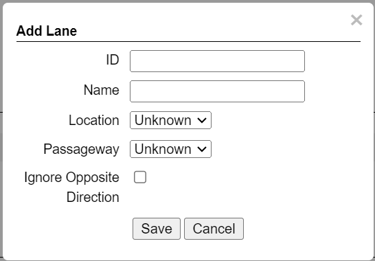
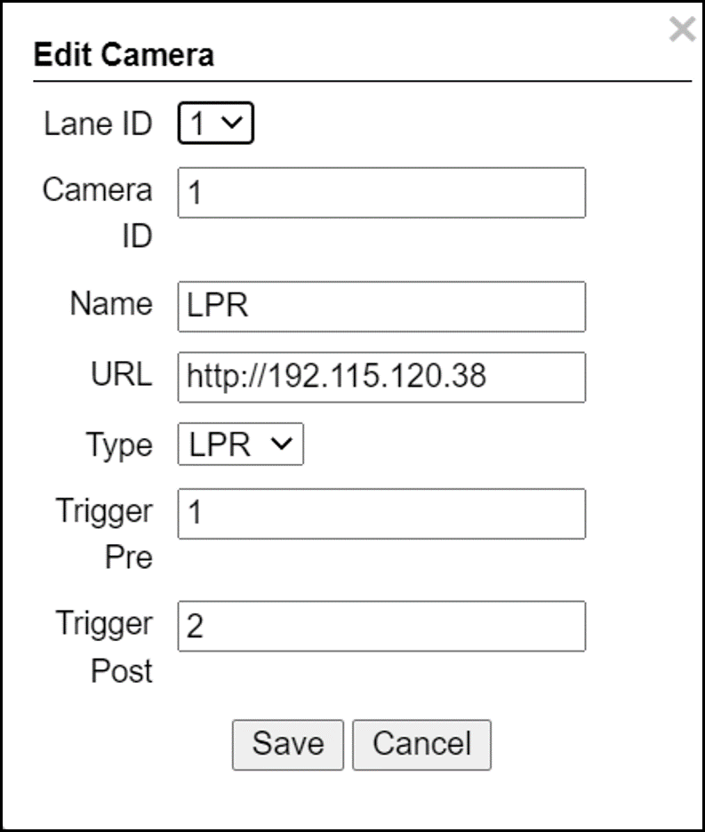
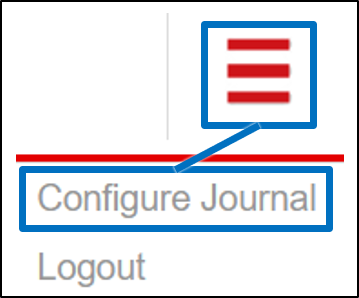

RoadView ALPR User Guide
Advanced ALPR Software
Release 1.x
Click to show the Table of Contents
- 1. Recommended Reading/Related Documents
- 2. Applicability
- 3. Training and Support
- 4. Glossary of Terms
- 5. System Overview
- 6. System Requirements
- 7. Quick Overview of Steps
- 8. Preparation for Configuration
- 8.1. Connecting a Computer/Laptop to the Network
- 8.2. Reserving IP Addresses in your Network
- 8.3. Determining the IP Addresses of the Connected Cameras
- 8.4. Changing the IP Addresses of the Cameras
- 8.5. Determining the IP Address of the RoadView Computer with IZ Discovery
- 8.6. Changing a Device’s IP Address and Network Settings
- 9. Logging In and Logging Out
- 10. Trigger Sources and Trigger Modes Overview
- 11. Settings Tab
- 11.1. Software Version and Camera Information
- 11.2. Network Settings
- 11.3. FTP/SFTP Settings
- 11.4. Date and Time Settings
- 11.5. HTTP Integration
- 11.6. Plate Recognizer (Not Used)
- 11.7. IZCloud Integration
- 11.8. AMANO Integration
- 11.9. TIBA Integration
- 11.10. Designa Integration
- 11.11. Offline Queue
- 11.12. Monitoring (IZMonitoring Server Integration)
- 11.13. ZAP Integration
- 11.14. Direct Trigger
- 11.15. INEX I/O Controller
- 11.16. ICP Integration (Not Currently Used)
- 11.17. IRD Integration (Not Currently Used)
- 11.18. Journal (Optional Local Storage)
- 11.19. Events Post Processing
- 11.20. Trigger Offset
- 11.21. Detector Configuration
- 11.22. Lanes
- 11.23. Cameras
- 12. Live (Journal) Tab
- 13. Search Tab
- 14. Calibration Tab
- 15. System Info Tab
- 16. Troubleshooting
- 17. Notice and Legal Disclaimer
1. Recommended Reading/Related Documents
Click to show the Related Documents table
| Doc. No. | Title |
|---|---|
RoadView ALPR Release Notes (for Release rrr) |
|
IZIO Digital IO Controller Installation and User Guide |
|
ADAM (IZIO) P2P Configuration |
|
IZ-REM-RELAY Remote (Web) Relays Series: Data Sheet and supporting documentation |
|
IZ Discovery Utility software components |
|
IZ Discovery User Guide |
|
ZAP: INEX Technologies Application Protocol, Version 4.5 |
|
INEX HTTP API for Major Version "M", Release "x.y"; document version W |
|
IZMonitoring Server: Camera Monitoring API |
|
IZMonitoring Server API |
|
IZCentral User Guide |
|
Software End User License Agreement (includes list of open source software) |
|
INEX ALPR Installation for AMANO |
|
INEX IZCloud Integration |
|
INEX TIBA Integration |
3. Training and Support
3.1. Training
This document does not take the place of training by INEX Technologies' certified specialists. Contact INEX Technologies to schedule training.
3.2. Support
If you have any questions, please contact our support team via our INEX Technologies Website.
4. Glossary of Terms
Click to show the Glossary
| Term | Explanation |
|---|---|
ALPR |
Automatic License Plate Recognition |
DHCP |
Dynamic Host Configuration Protocol. A DHCP server assigns a unique Internet Protocol (IP) address to each device connected to a network. |
DPU |
DPU is a generic term for INEX/TECH Data Processing Units. RoadView software can run on INEX/TECH DPUs with graphic processors, or on ALPR All-in-one Camera Systems with built-in processors. |
IZ |
INEX/ZAMIR (former company name; now called INEX Technologies, also called INEX/TECH) |
IZ ALPR system |
An Automatic License Plate Recognition system utilizing cameras and RoadView software. The IZ ALPR system can capture LPR Events, and transmit them to other systems such as IZCentral. |
IZCentral |
Server software that communicates with one or more IZ ALPR systems. IZCentral provides a central repository for all LPR Events generated by the RoadView(s). IZCentral can also interface with many 3rd party systems via their proprietary protocols. |
LPR Event |
The identified occurrence of a passing vehicle by the IZ ALPR System. An LPR Event includes metadata (location, lane identifiers, timestamp, the identified license plate number, recognition confidence, and more), plus a set of related images; typically, an Overview image, an LPR camera image and an image of the license plate. Also called a Vehicle Event or Event. An Event may include images from more than one camera in the same Lane. |
.NET |
Software framework that runs primarily on Microsoft Windows. See also WCF. |
NIC |
Network Interface Card |
RTSP |
Real Time Streaming Protocol. A network protocol designed to control streaming media servers. |
Trigger |
A command sent to an IZ ALPR system to create an LPR Event. Trigger sources can be from hardware signals, generated by software, or sent by a 3rd party system via various protocols. |
WCF |
Windows Communication Foundation. A Microsoft class library that is included with the .NET Framework. See also .NET. |
ZAP |
Zamir Application Protocol - Proprietary INEX Technologies protocol for interfacing with an IZ ALPR system and IZCentral. |
5. System Overview
RoadView is advanced ALPR software that reads license plates using sophisticated image recognition algorithms, and creates LPR Events. RoadView sends LPR Event data via HTTP, the proprietary INEX ZAP protocol or other protocols to other systems, typically IZCentral (see the IZCentral User Guide - see Section 1). RoadView can be configured and monitored using a web-based GUI.
|
RoadView can send Events to IZCentral or 3rd party systems using different protocols. See Section 10. |
6. System Requirements
You will need to provide a laptop computer to use for configuration. If you will be using the laptop outdoors, the screen must be able to be seen in strong sunlight. Required software:
-
Windows 10 or above - with .NET 4.5 enabled in "Windows Features"
-
Internet Explorer browser version 11 or higher, or the latest version of Chrome
7. Quick Overview of Steps
-
Reserve IP addresses for the components in your ALPR system - RoadView computer(s) and camera(s) - see Section 8.2.
-
Use IZ Discovery to find the initial IP Addresses of the cameras connected to your network - see Section 8.3.
-
Log into each camera, and change its IP address according to the requirements of your network. Use fixed addresses. Record these new addresses for use in RoadView configuration. See Section 8.4.
-
Use IZ Discovery to find the IP address of the RoadView computer. Change the computer’s IP address according to the requirements of your network. See Section 8.5 and Section 8.6.
-
Review the different trigger sources and sequences, and triggering operational modes (see Section 10)
-
Log in to RoadView, and configure RoadView using the Settings tab, including adding the connected Lanes and cameras - see Section 11
-
On the Calibration tab, adjust the zoom and focus to get a clear, sharp picture. Set the expected plate minimum and maximum width, capture zone and other parameters. See Section 14.
-
On the Live tab, verify that Events are being generated for each vehicle passing each camera, and that the recognition has sufficient accuracy and confidence. See Section 12.
-
Use the Search tab to find records stored in the RoadView database. See Section 13.
8. Preparation for Configuration
8.1. Connecting a Computer/Laptop to the Network
Connect your laptop to the same network switch the computer running RoadView is connected to.
8.2. Reserving IP Addresses in your Network
The INEX cameras have been pre-configured with default IP addresses. You will probably need to change these addresses to conform to the requirements of your network. Be sure that you have IP addresses reserved for all components of your ALPR system (RoadView computer and cameras).
8.3. Determining the IP Addresses of the Connected Cameras
See your camera’s Installation Guide for an explanation of how to determine the initial IP addresses of cameras on your network (using IZ Discovery). You will need this information to log into the cameras, and to change the cameras' IP addresses.
8.4. Changing the IP Addresses of the Cameras
See your camera’s Installation Guide for an explanation of how to log in to a camera, and how to edit its IP address (fixed addresses are highly recommended). Record the new addresses; you will need them to configure the RoadView software.
8.5. Determining the IP Address of the RoadView Computer with IZ Discovery
See the IZ Discovery User Guide (see Section 1).
8.6. Changing a Device’s IP Address and Network Settings
See the IZ Discovery User Guide (see Section 1).
9. Logging In and Logging Out
9.1. Logging In
-
Open a browser (latest version of Chrome or IE 11 or higher). Type in the IP address of the RoadView computer. For example:
http://192.115.120.76/The RoadView GUI can now be accessed using https at the start of the URL. This enables secure communications with the RoadView GUI. However, due to the type of certification being used, you will see a security error message. Use the options on this warning screen to manually proceed to the RoadView GUI.
-
In the login screen, enter the default username and password: (root, root):
 Figure 2. Logging In to the Computer
Figure 2. Logging In to the Computer -
You should see the RoadView Live (Journal) tab (see Section 12). To configure RoadView, switch to the Settings tab (see Section 10).

10. Trigger Sources and Trigger Modes Overview
A trigger is a command sent to an IZ ALPR system to create an Event. Triggers can originate from hardware signals, from video analytics or from software/3rd party system protocols.
The system constantly captures video frames and stores them in a buffer. However, the Triggering Mode determines if all, or only some of, these frames will be used for license plate recognition and Event building. Other parameters affect how many frames before (pre) and after (post) the trigger will be used:
-
Protocol sections on the Settings tab (see Section 11)
-
Direct Trigger (see Section 11.14)
-
INEX I/O Controller (see Section 11.15)
-
Trigger Offset (see Section 11.20)
-
The number of Trigger Pre and Trigger Post frames (defined when a camera is configured - see Section 11.23)
|
DOT cameras take images of USDOT numbers, but do not perform LPR recognition. However, RoadView will generate Events even without LPR recognition. |
The Trigger Operational Modes (set in the Detector Configuration section of the Settings tab - see Section 11.21) affect how Events are created (see Figure 5):
-
NonTriggered - Events are created and reported using LPR video analytics
-
Triggered - Events are created and reported when a trigger is received
Triggered mode must be used for DOT (USDOT number image capture) cameras.
-
Hybrid - Events are continually created internally by LPR video analytics, but are only reported when a trigger is received. The Event closest in time to the trigger will be reported (sent to storage). See Section 11.21 where the Hybrid Pre/Post Time parameters are described.
In Hybrid mode, if no recognition was possible (no vehicle, no plate, unrecognizable plate, etc.), an Event will be created as it would be in Triggered mode. The Event will be created using frames captured at the time the Trigger was received, along with the Trigger Pre and Post frames, instead of using the frames from the NonTriggered video analytics.
See Section 10 and Section 11.23. -
NonTriggered With Trigger - NonTriggered Events are continually created and reported by LPR video analytics. In addition, Triggered Events are created and reported when a trigger is received.
Each type of Trigger Operational Mode has its own advantages:
-
Triggered types require external triggering hardware or software, and are more accurate. All vehicle images are recorded, even if the plate was not recognized. In addition, LPR Events can be generated on demand by third-party systems.
-
NonTriggered types do not require any external triggering hardware (such as inductive loops). However, they are less accurate.
11. Settings Tab
Use the Settings tab after the first installation or reinstallation of the IZ ALPR system, or when some fundamental parameters need updating. For example, if the Camera System or DPU was moved to a different location (time zone).
|
After clicking the Save button at the end of the Detector Configuration section, it will take several seconds before the Live tab can start displaying Events. Also, some defaults and/or available parameters may change, depending on the Detector Configuration "Mode" selected. |
11.1. Software Version and Camera Information
The box at the upper right of the Settings screen shows:
-
The RoadView software version
-
The model, part number and serial number of the camera(s) RoadView is communicating with:
11.2. Network Settings
-
If needed, set the RoadView computer’s IP address parameters.
-
Remember to click the Save button in this section; the change will be applied immediately.
|
The Network Settings refer to the RoadView computer (Camera System or DPU) - NOT the computer on which the browser displaying the GUI is running. It is highly recommended to use a fixed IP address (not DHCP). A fixed IP address enables you to access the computer using the same URL every time, even after unexpected power outages. |
11.3. FTP/SFTP Settings
-
Select the desired communication protocol - FTP, SFTP, or both
Be sure to click the Save button at the end of this section if you change these protocol selections, or if you enable or disable FTP or SFTP (check boxes). -
Separate sections will appear for FTP and SFTP, enabling you to click a button to add user(s) who can connect to a RoadView computer via FTP/SFTP
-
FTP users are automatically added as SFTP users
-
Deleting an SFTP user will automatically delete the user from FTP
-
The Port is fixed; this is the port that the users' system will use to communicate with the RoadView computer
Figure 10. Adding an SFTP User
-
-
Each user that appears in the table can be edited or deleted; however, only the password can be edited. In order to rename a user, you will need to delete the existing user and re-enter it.
-
Remember to click Save after changing the password.
-
If a user is added, deleted or changed (except for a password change), the changes are saved automatically
11.4. Date and Time Settings
|
The Date and Time Settings refer to the location of the RoadView computer (Camera System or DPU) - NOT the computer on which the browser displaying the GUI is running. The Time Zone selections are organized by continent. For example, the "America/" prefix covers various cities and countries in North America (U.S. and Canada) and South America. |
-
Set Time (Automatically/Manually)
-
If Automatic, the date and time will be updated from a central Network Time server. Select the appropriate server, and the interval at which you want RoadView to poll for the date and time (selected from the Polling Interval dropdown).
-
Click the "Update Now" button to update the date and time immediately.
-
The icon (green check mark or red "x") indicates if the URL of the NTP server is correct, and the connection to it was successful.
-
-
If Manual, click in the Date and Time box to display a calendar/time popup. You should also select a Time Zone; set it to the local time at the location in which the Camera System/DPU is installed (not the UTC default).
-
-
Remember to click the Save button at the end of this section after making changes.
11.5. HTTP Integration
|
RoadView can send Events to IZCentral or 3rd party systems using the INEX HTTP Protocol, INEX ZAP Protocol or other protocols. For details about the INEX HTTP protocol, see the appropriate INEX HTTP API Protocol document - see Section 1. RoadView can send Events via HTTP, and act as both a ZAP Server and ZAP Client - all simultaneously. If you are using an IZMobileLPI system, contact INEX for details on how to set the HTTP URL parameter. |
-
Click Add HTTP Integration. Note that this feature enables you to use multiple HTTP channels (see Figure 13).
-
HTTP URL - URL for an external system to listen on, in order to receive Events from RoadView via the INEX HTTP protocol (see the appropriate INEX HTTP API Protocol document - see Section 1).
For an external system, "api" at the end of the URL is optional.
For IZCentral, "api" is mandatory; also, IZCentral currently only works with HTTP API 1.3 (chosen from the Protocol Version dropdown).
-
Be sure to use the correct format:
http://<IP address of IZCentral or 3rd party computer>:<port number>/api
For example (port is typically 5801):
http://195.163.2.73:5801/apiFor secure communication, https can be used in the URL. In such a case, use the port registered for secure communication in IZCentral (for example, 11443). However, IZCentral must be configured to accept an encrypted connection (see the IZCentral User Guide for details - see Section 1).
-
-
Protocol Version - The appropriate HTTP API version to use for your application.
In INEX HTTP API version 1.5, the following items have not been implemented in RoadView:
camera_id and camera_name in the Upload Event command (images and lpr_results blocks)
See the HTTP API 1.5 document. -
Separated Images - If checked, then images are sent in separate messages after the Event message; if unchecked, images and the Event are sent together in the Event message.
-
Send Images Data (automatically checked for HTTP API 2.3 and above, as chosen from the Protocol Version dropdown) - If checked, then image data is sent as "data base64 encoded" inside the message; if unchecked, this field is not included in the message.
-
Offline Enabled - Used if you want to enable offline saving of Events and images via HTTP. If you try to send an Event, but do not have a connection to the server, then this event will be put in an offline queue, and sent again when connection with the server is restored. Note that if you enable offline capabilities, you must configure the offline queue parameters (see Section 11.11).
-
Send Triggers (only enabled for HTTP API versions 1.3 to 1.6, as chosen from the Protocol Version dropdown) - If checked, then RoadView will send Trigger Received messages to the server. The meaning of this command is: The camera has received a trigger to create an Event. The Event is being processed, and will be available soon.
-
Keep Alive Interval (ms) - How often a status message is sent from RoadView to the server
-
Event/Images Timeout (ms) - If an Event or image message cannot be sent for this timeout period, then the event/image is put in the offline queue
-
Status Timeout (ms) - If a status message cannot be sent to the server for this amount of time, RoadView stops sending the message, and sends it again at the next Keep Alive Interval
-
Lane ID - the Lane for which Events and statuses will be sent ("All" or a specific Lane)
-
After clicking the Save button, adding/editing an integration can take several seconds
-
Each integration (channel) that appears in the table can be edited or deleted
-
If you delete an entry, you will be asked to verify the deletion.
11.7. IZCloud Integration
See the IZCloud document (see Section 1).
11.8. AMANO Integration
See the AMANO document (see Section 1).
11.9. TIBA Integration
See the TIBA document (see Section 1).
11.11. Offline Queue

These parameters are currently used to configure offline Event storage for HTTP Integration (see Section 11.5)
-
Send Offline Events Every - not currently used
-
Expiration Enabled - Enables the following parameters:
-
Offline Events Expire After - If an Event was added to the offline queue because there was no connection with client, and the connection with the client was not restored within this time, the Event will be removed from the offline queue.
-
Send Offline Events After - not currently used
-
11.12. Monitoring (IZMonitoring Server Integration)

When Monitoring Integration (IZMonitoring Server Integration) is enabled, the following parameters appear:
-
URL - URL of the IZMonitoring Server
-
Keep Alive Timeout (seconds) - How often RoadView sends Keep Alive messages. If the Server does not receive another Keep Alive message before this time expires, the overall status (severity) of the product (camera) will be set to "Offline" automatically by the Server.
-
Status Timeout (seconds) - How often RoadView sends a full status message to the Server.
-
Disk Critical Threshold - When the percentage of used space on the disk (where the RoadView storage is located) is above this number, then a critical disk status is sent to the Server.
-
Remember to click the Save button at the end of the Detector Configuration section after making changes.
11.13. ZAP Integration
|
RoadView can send Events to IZCentral or 3rd party systems using the INEX HTTP Protocol (see Section 11.5) and/or the INEX ZAP Protocol. RoadView can send Events via HTTP, and act as both a ZAP Server and ZAP Client - all simultaneously. |
-
ZAP Server - Check the box to have RoadView act as a ZAP Server, to which ZAP Clients can connect (see the ZAP Protocol document for details):
-
Ports - Each Lane configured in RoadView will automatically have its own row in the table. Each Lane should have a different port number.
-
ZAP Version - ZAP communication protocol version. It is recommended to use version 4.4. The connected clients must use the same version.
-
Confidence Filter - the confidence level below which Events are not sent
-
Keep Time (seconds) - how long a Capture message is to be left in memory before it will be deleted (if a Keep message is not received)
-
Offline Enabled - check this box to enable the ZAP offline queue
-
FTP Enabled (for ZAP Server) - when a client is connected to RoadView via ZAP, images can be sent to the client via FTP if this checkbox is checked.
-
FTP Server - the IP address of the FTP server
-
FTP Port - the port on the FTP server listening for FTP messages
-
FTP Folder - the folder path on the FTP server where the images will be stored
-
FTP User - the username used to access the FTP server
-
FTP Password - the password used to access the FTP server
-
FTP Keep Alive Rate (seconds) - time (in seconds) between attempts to check that the connection with the FTP server is still alive
-
-
-
ZAP Client - Check the box to have RoadView act as a ZAP Client, which will connect to a ZAP Server (see the ZAP Protocol document for details).
If you want RoadView to work with IZCentral, RoadView can only be working as a ZAP Client. In this mode, the RoadView ZAP Client port must match the IZCentral ZAP port (see the IZCentral documentation - see Section 1)-
IP - The IP address of the ZAP Server (to which RoadView acting as a client should connect)
-
Port - The port number of the ZAP Server
-
ZAP Version - ZAP communication protocol version. It is recommended to use version 4.4. The server being connected to must use the same version.
-
Confidence Filter - the confidence level below which Events are not sent
-
Keep Time (seconds) - how long a Capture message is to be left in memory before it will be deleted (if a Keep message is not received)
-
Offline Enabled - check this box to enable the ZAP offline queue
-
FTP Enabled (for ZAP Client) - when RoadView is connected to a ZAP server, images can be sent to the server via FTP if this checkbox is checked. (See the FTP Server items for the definition of the additional FTP parameters.)
-
-
Remember to click the Save button under the Detection Configuration section after changing these parameters.
11.14. Direct Trigger
The Direct Trigger settings are used in these operational modes: Triggered, Hybrid or NonTriggered With Trigger (see Section 10).
This parameter is used for Camera System models with external trigger input wires, such as the IZA500G. See your Camera System’s Installation Guide for details.
A loop controller can provide trigger information to RoadView. You can connect dry or wet contacts to the Camera System’s trigger inputs. The rise and fall of the voltage levels at these inputs sends a trigger to RoadView (see Section 10).
The "trigger time" used can be influenced by using the rising edge or falling edge of the pulse at the inputs to the Camera System. The Direct trigger mode options are (see Figure 4):
-
Disabled - Triggers will not be generated
-
OnRise - A trigger is generated when the voltage level sensed on the trigger wires moves from low to high
-
OnFall - A trigger is generated when the voltage level sensed on the trigger wires moves from high to low
-
Remember to click the Save button under the Detection Configuration section after changing these parameters.
11.15. INEX I/O Controller
The INEX I/O Controller settings are used in Triggered types of operational modes (for example Triggered, Hybrid or NonTriggered With Trigger). See Section 10.
These parameters are used if triggers are sent via the LAN using an INEX IZIO Digital I/O Controller. See the IZIO Installation and User Guide for instructions on how to install and configure the IZIO (especially its IP address). See Section 1.
The IZIO provides trigger information to RoadView. You can connect dry or wet contacts to the IZIO inputs. The rise and fall of the voltage levels at these inputs (such as pulses from loop controllers) are represented by a bit stream sent by the IZIO/ADAM to RoadView. A change in state of an IZIO input causes the generation of a trigger (see Section 10).
In Server mode, advanced P2P mode support was added (available via the IZIO/ADAM configuration application); this enables the IZIO/ADAM to send state changes to multiple RoadView instances. See the P2P document (see Section 1).
-
Pulling or Server - how the digitized pulses are obtained by RoadView
-
Pulling - RoadView will request state changes from the IZIO, sampled every 20 ms
-
Server - IZIO sends a notification of a state change to RoadView (sampling is not needed)
-
-
Lane ID - The Lane ID as defined in the lower part of the Settings tab
-
IP Address - IZIO’s IP address (configured via the IZIO configuration software. See the IZIO Guide for details (see Section 1).
-
Input - The input channel on the IZIO to be polled/sampled
-
Trigger mode - The "trigger time" used can be influenced by using the rising edge or falling edge of the pulse at the IO input of the IZIO/ADAM. The options are (see Figure 4):
-
Disabled - Triggers will not be generated
-
OnRise - A trigger is generated when the voltage level sensed on the trigger wires moves from low to high
-
OnFall - A trigger is generated when the voltage level sensed on the trigger wires moves from high to low
-
-
Remember to click the Save button under the Detection Configuration section after changing these parameters.
11.18. Journal (Optional Local Storage)
The Journal (Local Storage) parameters determine if and how Events are stored on the local RoadView computer disk (the parameters only appear if the disk is in use).
The Journal data is stored at: /mnt/data/journal
-
Cleanup Interval - interval in milliseconds at which old Events are deleted in order to be within Max Count on Disk
-
Max Count on Disk - Maximum number of Events that can be stored on the RoadView computer’s disk; this parameter should be left at its default
11.19. Events Post Processing
-
Skip Empty Events - When an Event does not include a plate recognition, it is ignored.
-
Combining Enabled - used for combining Events with the same or similar recognition
-
Send Timeout - if another Event is received with the same or similar recognition results within this timeout, the two Events are merged into one Event
-
Lev Distance - the maximum Levenshtein distance between the two plate reads for which the Events will be combined (see Section 11.21 for a more detailed explanation of Levenshtein distance).
-
Align to Height - when the LPR and OV images from the Events are merged, RoadView selects the images in which the plate patch is closest to this percentage of the total height of the LPR/OV image. For example, if the images are 1000 pixels high, and this parameter is set to 75%, then RoadView selects images in which the plate patch is closest (either above or below) a virtual line 750 pixels from the top of the image.
-
11.20. Trigger Offset
The Trigger Offset affects all triggers (in all modes - see Section 10).
When Trigger Offset is enabled, the following parameter(s) appear:
-
Offset (in milliseconds) - See Section 10
The trigger command may arrive at a different time than actual trigger’s (physical) arrival time (see Figure 4). For example, there is often a delay between the time a vehicle passes over an inductive loop, and the time the loop controller generates a pulse. This latency can be compensated for by an "offset".
11.21. Detector Configuration
Plate recognition is done in 3 stages:
-
The position of the license plate is determined in each incoming frame (from each camera)
-
Characters from each license plate image are read and recognized
-
All of the reads of each plate are grouped to create LPR Events
The following parameters are used to configure these processes. Remember to click the Save button at the end of this section after changing these parameters:
-
Mode - see Section 10. Note that parameters may appear or be hidden, depending on the chosen Mode.
-
Region - Region for which characters on the plate will be recognized. Select from the following options:
-
Australia
-
Canada/North America - same as North America LPR, with a different state recognition model that includes Canadian states.
-
Europe
-
Israel
-
North America - general recognition that includes all U.S.A. states
-
North America (OR) - same as North America, with the addition of syntax checking (against predefined patterns of characters) for Oregon state
-
-
State - The State within the selected Region for which characters on the plate will be recognized. You can also select "ALL"; this indicates that the recognition engine will use a general model for this Region.
-
Skip stacked characters (only for Regions with stacked character plates) - When enabled, causes stacked characters to be excluded from the plate read.
-
Detector confidence threshold - The minimum Detector confidence that this rectangle is a license plate. If a read is at or above this threshold, the image is sent on for plate reading (plate character) processing.
-
Plate reader confidence threshold - The minimum Plate Reader confidence that the characters read are correct. If a read is at or above this threshold, an Event is created. If more than one camera is capturing images from a lane, the image with the highest confidence among the cameras is used.
-
Plate reader regexp filter - Only license plate reads meeting these regular expression filter criteria will have Events created for them. Typically, the default should be used (.* = allow all reads).
-
Min plate read count - To increase read accuracy, plates are read from more than one video frame. If the same plate read results match on at least this number of frames, then the Event will be created.
For slow-moving traffic, this parameter should be increased.
For faster traffic, you will only be able to set it to a small number of reads. -
Wait before event emit, ms - (affects results in NonTriggered or Hybrid modes)
The minimum time from the first plate read until the time the Event will be built (emitted) - which can result in a greater number of frames used than the "Min plate read count" parameter. You may want to get LPR results with better confidence by increasing this number. RoadView will wait for more correct reads before the Event is built (see Figure 23).
As a vehicle approaches a camera, waiting longer will usually (depending on road geometry) result in images of the plate getting larger and easier to read accurately.
Note that in hybrid mode, it is recommended to set this parameter greater than 0. Setting this parameter to 0 will result in lower read confidence, since the trigger and the first read will occur close together.Figure 23. Illustration of Wait Before Event Emit -
LP forget interval, ms - RoadView may not have been able to read a plate over the course of several frames, which appear between two groups of frames with correct reads.
If the size of this "hole" is large, then the vehicle has probably disappeared but then returned. This value controls whether or not to consider the two sequences of captures to be a single Event, or two separate Events.Figure 24. Illustration of LP Forget Interval -
Max Levenshtein distance - Different reads of the same plate may not be identical due to shadows, sunlight, blurred images, etc. However, we want to minimize these effects by treating slightly different reads as the same result. We allow a maximum "distance" (number of changes required to match two strings) between plate reads in an Event. If the distance is less than or equal to this parameter, then the comparison is considered to be a valid match for the Event.
-
JPEG frame quality, 0-100 (0=no frame sent) - The Overview image JPEG frame quality used to send images to IZCentral or a 3rd party system.
-
JPEG plate quality, 0-100 (0=no frame sent) - The LPR image JPEG frame quality used to send images to IZCentral or a 3rd party system.
-
Include all images (for "Triggered" and "NonTriggered With Trigger" modes only) - Enables display in Live tab, and sending of all images (including pre- and post-trigger frames) - not only the "best" ones that were used for plate recognition
-
Image Resize - when enabled, and the Event confidence is equal or higher than the Resize Confidence parameter, then each LPR and OV image is resized according to the Image Width (and the height is resized proportionally).
-
Image Width - the resize width
-
Resize Confidence - the Event confidence threshold for enabling resizing
-
-
Two Line Plate - When enabled, invokes the capability to recognize two-line plates (in which the license plate number consists of two rows).
-
Threshold - if the ratio of the width of the plate to its height is less than this threshold, then the plate very likely has two lines. The plate read will be the lower number added to the upper number.
-
Padding Width (%) - the percentage of the width of the plate to be removed from each side of the upper and lower images before putting the two numbers together. This eliminates empty space before the composite number is sent for recognition.
-
Padding Height (%) - the percentage of the height of the plate
-
This percentage is measured from the top, to determine where to crop the plate to determine how to extract the upper number’s image
-
This same percentage is measured from the bottom, to determine where to crop the plate to determine how to extract the lower number’s image
-
-
-
Vehicle Class Detection - enables/disables vehicle class detection (car, bus, etc.). This item can be shown on the Live tab using the multi-line menu at the upper right of the screen (see Section 12).
-
State recognition - Enables state recognition (an Overview camera must have been defined and configured)
-
Send default state (only if State recognition is enabled) - If no State was recognized, checking this box enables sending the Default State Value in the HTTP message for the Event as per the following additional parameters that appear: (If unchecked, no State field will be sent in the message.)
-
Default state value - The default value to be sent in the HTTP message for the Event if no State was recognized.
-
State confidence threshold - The minimum confidence percentage for State recognition
-
-
LPR Stub Enabled -If a plate was detected, but without a plate read, RoadView sends the text defined in the LPR Stub text box, along with the LPR Stub Confidence value:
-
LPR Stub - for example, "NOREAD"
-
LPR Stub Confidence - for example, 0
-
-
Hybrid Pre Time (for Hybrid mode only) -Time in milliseconds before the trigger to search for the closest Event to the trigger (see Figure 25)
-
Hybrid Post Time (for Hybrid mode only) - Time in milliseconds after the trigger to search for the closest Event to the trigger (see Figure 25)
Figure 25. Illustration of Hybrid Pre/Post Time-
Trigger 1 will be checked against the Hybrid Pre/Post time and use the closest Event - Event 1 or Event 2 (most likely). Note that Trigger 1 is closest to Event 2, even though it is closer to the best LPR frame in Event 1.
-
Trigger 2 will use Event 2.
-
Trigger 3 will wait for a new Event. If a new Event does not arrive within the Hybrid Post Time, a trigger Event will be created, without an LPR read, but with associated images and a timestamp.
-
11.22. Lanes
-
Actions:
-
Edit - edit the Lane’s parameters
-
Delete - delete the Lane (a warning will be displayed)
-
Trigger - send a software trigger immediately to RoadView (works in all modes except NonTriggered)
Each Lane number must be unique in the overall IZ ALPR system.
The images from all cameras capturing the same physical lane will be combined into a single Event.
Each "Lane" is actually a virtual Lane. For example, if you have two Camera Systems capturing the same physical lane, you will need to create two different "Lanes", and associate each Camera System’s cameras with a different "Lane".
Figure 27. Add/Edit Lane Dialog
-
-
ID (required) - The identification number of the lane to be captured by the cameras. This number will appear associated with Events in the Live tab (see Section 12).
-
Name (required) - The name of the Lane as it will appear in the GUI. This name will also be sent in HTTP and ZAP messages.
If you have upgraded from a previous RoadView version in which only Lane IDs were specified, Lane names will be automatically assigned the word "Lane" plus the Lane ID.
-
Avg Speed (for DOT cameras only) - The average vehicle speed expected in this Lane
-
Distance (for DOT cameras only) - The distance between the trigger device and the camera
-
Location (for ALPR cameras only) - Select one of the following options:
-
Unknown -The camera’s position relative to vehicles is unknown.
-
Front -the camera in this Lane is capturing images from the front of vehicles
-
Rear - the camera in this Lane is capturing images from the rear of vehicles
-
-
Ignore Opposite Direction - if enabled, then all Events for vehicles moving in the direction opposite to the direction arrow in the Calibration tab will be ignored (see Section 14). Note that you can add a Direction column to the Live tab using the multi-line menu at the upper right of the screen (see Section 12).
11.23. Cameras
|
If you are using an IZMobileLPI system, contact INEX for details on how to set the camera parameters. |
-
Actions:
-
Edit - edit the camera’s parameters (see Figure 29)
-
Delete - delete the camera (a warning will be displayed)
-
-
Camera table headers: Camera ID, Lane ID, Name, URL, Type (as configured when the camera was added)
-
Image - Thumbnail image from a recent camera image
If you add a camera, or edit a camera’s parameters and click the Save button in this dialog (even if you did not change the URL), you may see a warning icon in the Image column. The reappearance of the image indicates that the core software has restarted, and Events will resume being captured and displayed in the Live tab, with the following changes:
- The Transaction ID will restart at 1 for that camera.
- The history of previous Events for that camera will be cleared -
Add Camera (button at end of Cameras section):
Figure 29. Add/Edit Camera Dialog-
Lane ID - The identification number of the lane being captured by the camera(s). Select a Lane number you defined (see Section 11.22). This number will appear associated with Events in the Live tab (see Section 12).
The images from all cameras capturing the same physical lane will be combined into a single Event.
Using the same Lane ID for different cameras (even the LPR and OV cameras within the same Camera System) will combine the reads into one Event (see Section 11.22). You may even be able to improve read accuracy by changing the zoom to have one camera "see" closer than the other one.
You could also position cameras to be in different positions (front/rear as in a toll plaza).
-
Camera ID - For internal use; should be unique in the overall IZ ALPR system
-
Name - Camera name for internal use; should be unique in the overall IZ ALPR system
-
URL - RTSP or HTTP URL:
-
RTSP stream URL example:
rtsp://<camera IP address>/cam0_0 -
HTTP URL example:
http:// <camera IP address>
-
-
Type - Type of camera (LPR or View); used for integration with IZCentral
-
Trigger Pre (used in Triggered mode types only) - Number of frames to be included in the set of frames used to build an Event - before the trigger occurs (see Figure 4).
-
Trigger Post (used in Triggered mode types only) - Number of frames to be included in the set of frames used to build an Event - after the trigger occurs (see Figure 4)
-
12. Live (Journal) Tab
The Live tab displays Events and other data about each Event.
|
The Events displayed in the Live tab are being simultaneously sent via the protocols you selected in the Settings tab. You should see that Events are being generated for each vehicle passing each camera, with sufficient recognition accuracy and confidence. If not, see Section 16 for troubleshooting tips. If you return to the Live tab from another tab, the large picture returns to the LPR (black and white) camera image. DOT (USDOT number image capture) cameras generate Events, but without LPR reads. |
-
Each row includes (additional items can be added from the multi-line menu icon > Configure Journal selection - see Section 12):
-
Transaction (Event) ID. Note that each camera has its own Transaction ID sequence, so the same IDs may be used for different cameras.
-
Lane Name - Lane name as configured for the camera(s) viewing this lane in the Settings tab - see Section 11.22
-
Date and time when the Event was recorded
-
License Plate number (LPR)
-
Recognition confidence, expressed as a percentage
-
To add columns to the Live (and Search) tab displays:
-
Click on the multi-line menu icon at the upper right of the RoadView screen
-
Select "Configure Journal"
Figure 31. Configure Journal (Multi-line Menu) -
Select the additional columns to display, such as: State (state displayed on plate), State Confidence (confidence that the state has been recognized accurately), Class (vehicle class, such as car or truck), Class Confidence (confidence that the class has been recognized accurately) and Direction (direction vehicle was traveling - forward or backward - according to the direction arrow configured in the Calibration tab - see Section 14). (These additional columns will also appear on the Search tab - see Section 13.)
-
-
-
Pause/Run mode:
-
Pause the grid display by clicking on a row, or by using the pause button in the middle of the controls under the large image (). You can also click on the large image to toggle between Pause and Run mode. This is useful if you want to examine a specific Event.
-
You can also use these controls to move through the grid (next/previous Event, or start/end of Events).
-
Start the display running in real-time again using the Run button () or by clicking on the large image. This will refresh the display, and resume displaying Events, starting from the 20 most recent Events.
RoadView is continually recording and saving (Journal) Events. The Events are added to the Live display (Running mode operation) until the display is paused. Even when you pause the Live display, RoadView continues to record Events - and can display up to a maximum of 20 recent Events.
As you Pause/Run the Live grid, you may see momentary icons ( or ) appearing in the middle of the large image pane to indicate the mode.
-
-
The text below the Pause/Run controls displays a summary of the Event’s information.
-
The thumbnail images below the larger image pane display the overview and plate patch images from each camera. Click on one of the thumbnail images to display it in the larger image pane.
If both cameras in a Camera System were set to view the same lane, but one of the cameras (usually the color Overview camera) failed to capture the license plate properly, you will only see 3 thumbnails instead of 4.
If you are using a camera with one sensor (such as the IZ600F), you will see 2 thumbnails - one for the LPR/OV image, and one for the plate patch.
-
Zoom in on an area of interest in the large image (requires a mouse with a wheel):
-
Pause the grid
-
Hover (do not click) over the area of interest; the cursor will change to a magnifying glass.
-
Mouse wheel up a little at a time to enlarge the image
-
As the image enlarges, you may need to readjust the cursor position to re-focus on the area of interest
-
-
To save images, right-click on the large image pane, and save the image
13. Search Tab
The Search tab enables you to search for Event records stored in the RoadView database.
|
The same columns that were added to the Live display (using the multi-line menu at the upper right of the screen) will also appear in the Search display (see Section 12). |
13.1. Search Tab: Page Controls
Page controls are located at the upper right of the records grid:
13.2. Search Tab: Filters
Filter boxes are located at the top of each column; you can click on the question mark icons to show explanations of what you can enter in each filter box.
|
After applying filters, remember that you will need to use the page controls to see all of the filtered records. For example, if there are 85 results, but you configured the grid to display 20 records per page, you must use the page controls to see the filtered records appearing on each page. |
-
Numeric filters (Event ID, Confidences) - Enter a specific number (example '30'), a number and a '>' symbol (example '>30') or a number and a '<' symbol (example '<30')
-
Lane Name - Select All, or a specific lane
-
Time - Click in the filter box to display a date/time selection popup. Uncheck the check box to clear the filter (see Figure 34).
Figure 34. Search Tab: Time Filter Selection Popup-
Use the buttons at the top of the From/To sections to move between months
-
Use the calendar grids to select dates
-
Use the sliders to specify time
-
Click the Now button to select the current time/date
-
-
Text filters (LPR, State, Class) - Enter characters to find within the strings. For example, KZ will find KZR3791 and JKZ0714.
-
Direction - Select All, Forward, (Unknown) or Backward
14. Calibration Tab
-
When you see a vehicle at a typical capture position on the video, click on the video to pause it.
-
It is recommended to use the view called "Draw image by maintaining aspect ratio (two-headed arrow)". You select this view by clicking on the right-most button at the upper left of the screen:

-
Select a camera from the dropdown list (LPR or OV).
-
The Frame Width (horizontal) and Frame Height (vertical) are displayed at the lower left, and are set automatically according to the Camera’s hardware configuration. See your Camera’s Installation and Calibration Guide.
-
The Frame Timestamp at the lower left displays the date and time that the image is being taken/was taken by the camera.
-
Aim the camera using the mounting bracket’s adjustment hardware (see Figure 36).
-
Pan: Adjust the Pan so that the image of the license plate is in the horizontal middle of the Field of View.
-
Tilt: Adjust the Tilt so that the image of every expected plate position (depending on the vehicle type, such as passenger cars, jeeps, trucks, etc.) will be in the middle of the screen (from top to bottom).
-
Roll: Adjust the Roll so the license plate’s image is horizontally straight, parallel to the ground (not tilted to one side).
 Figure 36. Pan/Tilt/Roll (Angle) Adjustments
Figure 36. Pan/Tilt/Roll (Angle) Adjustments
-
-
When the correct position is achieved, make a preliminary tightening of the mounting screws.
-
Define the Region of Interest (ROI) by dragging on the corners (vertices) of the trapezoidal region. For optimum recognition accuracy, the ROI should be large enough to capture the region where plates could be found in images.
The following settings for the LPR and OV cameras are saved separately. For example, you may want a Region of Interest that is different for each camera.
-
Define the Plate Width Min: Events will only be created for plate reads whose width is greater than or equal to this parameter. It is recommended to enter 150 in the Plate Width Min text box.
This parameter can also be configured by dragging the small circle on the horizontal line on the Calibration tab (expressed in pixels).
This parameter can be used to ignore small plate reads. For example, if the image was taken when a vehicle is too far away, the characters are too small to be read - even by a human. -
Define the Plate Width Max: Events will only be created for plate reads whose width is less than or equal to this parameter. It is recommended to enter approximately 350 in the Plate Width Max text box.
This parameter can also be configured by dragging the large circle on the horizontal line on the Calibration tab (expressed in pixels).
This parameter can be used to prevent false reads, such as large numbers on trucks. -
Use the zoom and focus buttons to adjust the view of the video until the width of the plate is 150 pixels, and its plate image is clear and sharp. (The surrounding items, such as the vehicle body, do not need to be as sharp as the plate.)
There is a delay between a click of a zoom/focus button and when you see the effect on the screen. Be sure to wait until you see the change on the screen before clicking the button again. Clicking the button multiple times will cause you to "overshoot" the desired zoom/focus.
As you adjust the zoom and focus, you may need to reposition the camera in order to get the image of the plate back to the desired position.
-
Direction (red arrow on video): drag the head of the arrow around to point to the angle at which you expect vehicles to be moving. (The vehicle’s direction is also sent to the IZCloud as part of an Event.) You can add a Direction column to the Live tab using the multi-line menu at the upper right of the screen (see Section 12).
You can set the "Ignore Opposite Direction" parameter in the Lanes section to ignore all Events for vehicles moving in the direction opposite to the direction arrow in the Calibration tab (see Section 11.22). -
When you have finished, click the Save button. Wait several seconds for the display to refresh automatically, which indicates that the RoadView recognition software is running again with the updated parameters.
-
When the correct position is achieved, make a final tightening of the mounting hardware.
-
Repeat these steps for the other camera.
15. System Info Tab
|
Some System Info sections may not appear depending on your version of RoadView |
15.1. System Info Tab: System Info Section
This section provides the same information as in the upper right corner of the same Settings tab, namely the model, part number and serial number of the camera(s) RoadView is communicating with.
15.2. System Info Tab: Firmware Section
-
Firmware Version - the firmware version of the IZIC board (proprietary INEX electronics) in the Camera System/DPU
-
New Firmware - enables you to update new firmware in the IZIC board
-
Choose File - click this button to browse for the firmware file
-
Update Firmware - click this button to update the firmware using the file you chose
-
15.3. System Info Tab: Night Mode Section (for Specific Camera Models Only)
These parameters affect how RoadView controls an external illuminator:
-
Night Mode
-
Disable - never trigger the illuminator
-
Enable - camera and external illuminator behavior are optimized for night-time recognition. Recommended use is for calibration.
-
OV LED Intensity - Relative intensity of the built-in white LEDs, expressed as a percentage of the maximum possible intensity
-
Illuminator Intensity - (for IZS illuminators, synchronized with the Overview camera) Relative intensity of an external illuminator’s LEDs, expressed as a percentage of the maximum possible intensity
-
-
Auto - automatically senses day/night, in order to decide whether to trigger an external illuminator, according to the Camera System’s location (as defined by the Latitude and Longitude parameters). For the Auto mode, additional parameters appear:
Latitude and Longitude are user-entered coordinates; determine them using Google maps, by clicking on the location where the Camera System will be installed (remember to put in a minus sign as needed)
-
Latitude - latitude coordinate of Camera System’s location
-
Longitude - longitude coordinate of Camera System’s location
-
Post-Sunrise Offset - time after actual sunrise to be considered as the start of the day
-
Pre-Sunset Offset -time before actual sunset to be considered the end of the day
-
-
-
Remember to click the Save button at the end of this section after making changes.
15.4. System Info Tab: LPR LED
These parameters enable you to control the camera’s built-in IR LEDs.
-
Mode
-
Off - LEDs off
-
Multi-flash - each frame is illuminated with a different light intensity
-
Anti-flickering - reduces the visible flickering of the built-in IR LED illumination by disabling multi-flash mode and adjusting flash frequency
-
-
Intensity - light intensity in percent, where 0 is no light, and 100 is maximum light
16. Troubleshooting
|
For details about items in the following list related to hardware or configuration, see your camera’s Installation and Calibration Guide. |
| Symptom | Possible Solution |
|---|---|
Thumbnails in Settings tab, in the Camera section at bottom have been replaced by red exclamation points and/or |
|
Recognition rates are low |
Examine the video from the Camera on the Calibration tab:
|
17. Notice and Legal Disclaimer
17.1. Notice
INEX Technologies reserves the right to improve and enhance its product offerings. Thus, the illustrations and descriptions presented in this manual may differ in some respect from the products you receive.
Technical specifications are subject to change without notice.
In addition, please note that some figures are not drawn to scale, in order to illustrate the addressed issue more effectively.
All third-party trademarks are the property of their respective owners.
INEX Technologies cannot be held liable for technical and editorial omissions or errors made in this document; nor for incidental or consequential damages resulting from the furnishing, performance or use of this document.
Actions or circumstances that void the warranty are improper usage, improper handling without adequate electrostatic discharge (ESD) protection, defects resulting from natural disaster (fire, flood etc.) and unauthorized modifications or repair.
Power undervoltage, overvoltage and/or incorrect polarity will damage the unit and will void the warranty.
It is your responsibility to ensure that all wires connected to INEX Technologies' products have appropriate surge protection. Any damage due to electrical spikes (for example, lightning) is not covered by the warranty.
No part of this document may be reproduced in any form without permission from INEX Technologies.
17.2. Legal Disclaimer
TO THE MAXIMUM EXTENT PERMITTED BY APPLICABLE LAW, THE PRODUCT DESCRIBED, WITH ITS HARDWARE, SOFTWARE AND FIRMWARE, IS PROVIDED "AS IS", WITH ALL FAULTS AND ERRORS, AND OUR COMPANY MAKES NO WARRANTIES, EXPRESS OR IMPLIED, INCLUDING WITHOUT LIMITATION, MERCHANTABILITY, SATISFACTORY QUALITY, FITNESS FOR A PARTICULAR PURPOSE, AND NON-INFRINGEMENT OF THIRD PARTY. IN NO EVENT WILL OUR COMPANY, ITS DIRECTORS, OFFICERS, EMPLOYEES, OR AGENTS BE LIABLE TO YOU FOR ANY SPECIAL, CONSEQUENTIAL, INCIDENTAL, OR INDIRECT DAMAGES, INCLUDING, AMONG OTHERS, DAMAGES FOR LOSS OF BUSINESS PROFITS, BUSINESS INTERRUPTION, OR LOSS OF DATA OR DOCUMENTATION, IN CONNECTION WITH THE USE OF THIS PRODUCT, EVEN IF OUR COMPANY HAS BEEN ADVISED OF THE POSSIBILITY OF SUCH DAMAGES.
THE USE OF ANY INEX Technologies' SOFTWARE PRODUCTS OR ANY OTHER SOFTWARE PRODUCTS REFERRED TO IN THIS DOCUMENT WITH INTERNET ACCESS SHALL BE USED WHOLLY AT YOUR OWN RISK. INEX Technologies DOES NOT TAKE ANY RESPONSIBILITY FOR ABNORMAL OPERATION, PRIVACY LEAKAGE OR ANY OTHER DAMAGES RESULTING FROM CYBER ATTACK, HACKER ATTACK, VIRUS INFECTION OR ANY OTHER INTERNET SECURITY RISKS.
For details, see the INEX Software End User License Agreement.
© INEX Technologies - All rights reserved.
Doc. No. RV-ALPR-MAN-001